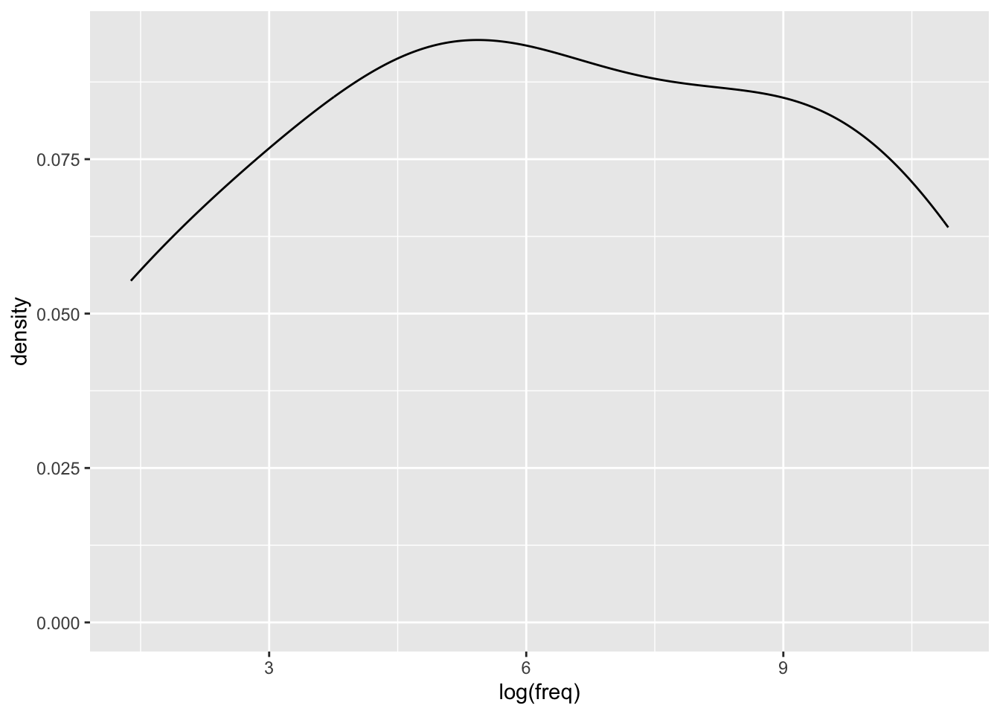

# suppress scientific notation
options(scipen=999)3 Continuous predictors
Regression for Linguists
This lecture is based on Ch. 5 (Correlation, Linear, and Nonlinear transformations) from Winter (2019).
Learning Objectives
Today we will learn…
- why and how to centre continuous predictors
- when and how to standardize continuous predictors
- why and how to log-transform continuous variables
Set-up environment
We’ll also need to load in our required packages. Hopefully you’ve already install the required packages (if not, go to Chapter 3).
# load libraries
pacman::p_load(
tidyverse,
here,
broom,
lme4,
janitor,
languageR)Load data
df_freq <- read_csv(here("data", "ELP_frequency.csv")) |>
clean_names()Reminder of our variables:
summary(df_freq) word freq rt
Length:12 Min. : 4.0 Min. :507.4
Class :character 1st Qu.: 57.5 1st Qu.:605.2
Mode :character Median : 325.0 Median :670.8
Mean : 9990.2 Mean :679.9
3rd Qu.: 6717.8 3rd Qu.:771.2
Max. :55522.0 Max. :877.5 Summary
In the last lectures we saw that the equation for a straight line boils down to its intercept and slope, and that linear regression fits a line to our data. This line results in predicted/fitted values, which fall along the line, and residuals, which are the difference between our observed values and the fitted values.
We also learned about two model assumptions: normality of residuals, and constant variance of residuals. We learned that we can plot these with histograms or Q-Q plots (normality), and residual plots (constant variance).
Now that we understand what a simple linear does, we can take a step back and focus on what we put into the model. So far we’ve looked at reaction times (milliseconds) as a function of word frequency. However, we don’t typically feed raw continuous data into a model, because most continuous linguistic variables are not normally distributed, and so a straight line will not fit it very well (because there will be some large variance for higher values).
3.1 Linear transformations
Linear transformations refer to constant changes across values that do not alter the relationship between these values. For example, adding, subtracting, or multiplying by a constant value will not alter the difference between values. Think of the example in the last lecture on the relationship between heights and ages as a function of the measurement unit: the relationship between all the values did not alter, because the difference between heights millimeters, centimeters, and meters is constant, as is the difference between ages in days, months, or years. We’ll now look at some common ways of linearly transforming our data, and the reasons behind doing so.
3.1.1 Centering
Centering is typically applied to predictor variables. Centering refers to subtracting the mean of a variable from each value, resulting in each centered value representing the original value’s deviance from the mean (i.e., a mean-deviation score). What would a centered value of \(0\) represent in terms of the original values?
Let’s try centering our frequency values. To create a new variable (or alter an existing variable), we can use the mutate() function from dplyr.
# add centered variable
df_freq <-
df_freq |>
mutate(freq_c = freq-mean(freq))This can also be done with base R, but it’s a lot more verbose.
# add centered variable with base R
df_freq$freq_c <- df_freq$freq-mean(df_freq$freq)Now let’s fit our models.
# run our model with the original predictor
fit_rt_freq <-
lm(rt ~ freq, data = df_freq)# run our model with the centered predictor
fit_rt_freq_c <-
lm(rt ~ freq_c, data = df_freq)If we compare the coefficients from fit_rt_freq and fit_rt_freq_c, what do we see? The only difference is the intercept values: 713.706298 (uncentered) and 679.9166667 (centered).
mean(df_freq$rt)[1] 679.9167The intercept for a centered continuous predictor variable corresponds to the mean of a continuous response variable. This is crucial in interpreting interaction effects, which we will discuss tomorrow. For more detail on interpreting interactions, see Chapter 8 in Winter (2019) (we won’t be discussing this chapter as a whole).
Centering interval data
If you have interval data with a specific upper and lower bound, you could alternatively subtract the median value. In linguistic research, this is most typically rating scale data. For example, if you have a dataset consisting of ratings from 1-7, you can centre these ratings by subtracting 4 from all responses. A centred response of -3 would correspond to the lowest rating (1), and of +3 to the highest rating (7), which 0 would correspond to a medial rating (4). This can also be helpful in plotting, as there is no question as to whether 1 or 7 was high or low, because all ratings are now centred around 0 (and negative numbers correspond to our intuition of low-ratings).
3.1.2 Standardizing (z-scoring)
We can also standardize continuous predictors by dividing centered values by the standard deviation of the sample. Let’s look at our frequency/reaction time data again.
First, what are our mean and standard deviation? This will help us understand the changes to our variables as we center and stardardize them.
mean(df_freq$freq)[1] 9990.167sd(df_freq$freq)[1] 18558.69What are the first six values of freq in the original scale?
df_freq$freq[1:6][1] 55522 40629 14895 3992 3850 409What are the first six values of freq_c in the centered scale? These should be the values of freq minus the mean of freq (which we saw above is 9990.1666667).
df_freq$freq_c[1:6][1] 45531.833 30638.833 4904.833 -5998.167 -6140.167 -9581.167Now, let’s create our standardised z-scores for frequency by dividing these centered values by the standard deviation of freq (which will be the same as the standard deviation of freq_c), and which we saw is 18558.6881679. Again, this can be done with mutate() from dplyr, or by using base R syntax.
# standardise using the tidyverse
df_freq <-
df_freq |>
mutate(freq_z = freq_c/sd(freq))# standardize with base R
df_freq$freq_z <- df_freq$freq_c/sd(df_freq$freq)head(df_freq)# A tibble: 6 × 5
word freq rt freq_c freq_z
<chr> <dbl> <dbl> <dbl> <dbl>
1 thing 55522 622. 45532. 2.45
2 life 40629 520. 30639. 1.65
3 door 14895 507. 4905. 0.264
4 angel 3992 637. -5998. -0.323
5 beer 3850 587. -6140. -0.331
6 disgrace 409 705 -9581. -0.516
Correlation
3.2 Non-linear transformations
This is really the meat and potates of dealing with continuous variables (depending on your subfield). In linguistic research, and especially experimental research, we often deal with continuous variables truncated/bound at 0. Reaction times, reading times and formant frequencies are all examples of such types of data: there is no such thing as a negative reading time or fundamental frequency. The problem with these types of data is that they are almost never normally distributed, which has implications for the normality of residuals for any line that tries to fit to these data. Very often, this type of data will have a ‘positive skew’, or a long tail off to the right (assuming larger values are plotting to the right). This shape is not symmetrical, meaning that the residuals tend to be much larger for larger values. It is also often the case that these very large, exceptional values will have a stronger influence on the line of best fit, leading to the coefficient estimates that are “suboptimal for the majority of data points” [@Baayen (2008); p. 92]. How do we deal with this nonnormality? We use non-linear transformations, the most common of which is the log-transformation.
3.2.1 Log-transformation
Let’s look at our reaction time data again. We’ll log-transform our reaction time data and frequency data. Note that in Winter (2019), frequency is transformed using log to the base 10 for interpretability, but we’ll stick to the natural logarithm.
df_freq |>
ggplot() +
aes(x = log(freq)) +
geom_density()
df_freq <-
df_freq |>
mutate(rt_log = log(rt),
freq_log = log(freq))lm(rt_log ~ freq_log, data = df_freq) |> tidy()# A tibble: 2 × 5
term estimate std.error statistic p.value
<chr> <dbl> <dbl> <dbl> <dbl>
1 (Intercept) 6.79 0.0611 111. 8.56e-17
2 freq_log -0.0453 0.00871 -5.20 4.03e- 4# or, log-transform directly in the model syntax
lm(log(rt) ~ log(freq), data = df_freq) |> tidy()# A tibble: 2 × 5
term estimate std.error statistic p.value
<chr> <dbl> <dbl> <dbl> <dbl>
1 (Intercept) 6.79 0.0611 111. 8.56e-17
2 log(freq) -0.0453 0.00871 -5.20 4.03e- 4Learning Objectives
Today we learned…
- why and how to centre continuous predictors
- when and how to standardize continuous predictors
- why and how to log-transform continuous variables
Important terms
| Term | Definition | Equation/Code |
|---|---|---|
| Centering | type of linear transformation | `dplyr::mutate(variable = variable - mean(variable))` |
| standardizing | linear transformation (applied for multiple continuous predictors) | df_freq$freq_z <- df_freq$freq_c/sd(df_freq$freq) |
| log-transformation | non-linear transformation for positively skewed continuous variables | log() |
| Error (random effects) | hings we cannot understand/measure. There are always sources of random error. | NA |
Take-home messages
Continuous data are often transformed before fitting a model to this data. Linear transformations, like adding or multiplying all values by a single value, are often performed on continuous predictors by means of centring and standardizing (when there are multiple continuous predictors). Non-linear transformations are often performed on continuous data with a positive skew (a few values much larger than the majority) in order to satisfy the normality assumption. Although the normality assumption refers to the normality of residuals, the distribution of the data will have implications for the distribution of the residuals. The most common non-linear transformation is the log-transformation (the inverse of the exponential), which shrinks values, especially making big numbers smaller. This has the result of squeezing big numbers towards smaller numbers, reducing the spread in the distribution (e.g., the log of 3 is 1.0986123, the log of 30 is 3.4011974, and the log of 30 is 5.7037825).
What to do with this information? If you have continuous data truncated at 0 (with no upperbound, e.g., reaction time data or fundamental frequency), visualise the data (histogram and Q-Q plot) in order to check its distribution. If it is not normally distributed, you will likely want to log-transform it. Is this data your response variable? Then that is all you will likely want to do. Is this data a predictor variable? Then you will want to centre it (subtract the mean of this variable from all values). Do you have more than one continuous predictor variable? Then standardizing these variables will facilitate the interpretation of interaction effects (we’ll talk about these soon).
3.3 Task
3.4 Assessing assumptions
- Re-run the models
fit_rt_freq,fit_rt_freq_c, andfit_log - Produce diagnostic plots for each of them (histograms, Q-Q plots, residual plots)
- Interpret the plots
3.5 Model comparison
- Use the
glance()function to inspect the \(R^2\), AIC, and BIC of each model. - Which is the best fit? Why?
Session Info
Developed with Quarto using R version 4.4.0 (2024-04-24) (Puppy Cup) and RStudio version 2023.9.0.463 (Desert Sunflower), and the following packages:
sessionInfo()R version 4.4.0 (2024-04-24)
Platform: aarch64-apple-darwin20
Running under: macOS Ventura 13.2.1
Matrix products: default
BLAS: /Library/Frameworks/R.framework/Versions/4.4-arm64/Resources/lib/libRblas.0.dylib
LAPACK: /Library/Frameworks/R.framework/Versions/4.4-arm64/Resources/lib/libRlapack.dylib; LAPACK version 3.12.0
locale:
[1] en_US.UTF-8/en_US.UTF-8/en_US.UTF-8/C/en_US.UTF-8/en_US.UTF-8
time zone: Europe/Berlin
tzcode source: internal
attached base packages:
[1] stats graphics grDevices datasets utils methods base
other attached packages:
[1] googlesheets4_1.1.1 gt_0.10.1 kableExtra_1.4.0
[4] knitr_1.43 patchwork_1.2.0 languageR_1.5.0
[7] janitor_2.2.0 lme4_1.1-35.3 Matrix_1.7-0
[10] broom_1.0.5 here_1.0.1 lubridate_1.9.3
[13] forcats_1.0.0 stringr_1.5.1 dplyr_1.1.4
[16] purrr_1.0.2 readr_2.1.5 tidyr_1.3.1
[19] tibble_3.2.1 ggplot2_3.5.1 tidyverse_2.0.0
loaded via a namespace (and not attached):
[1] gtable_0.3.5 xfun_0.40 htmlwidgets_1.6.4 gargle_1.5.2
[5] lattice_0.22-6 tzdb_0.4.0 vctrs_0.6.5 tools_4.4.0
[9] generics_0.1.3 curl_5.2.1 parallel_4.4.0 fansi_1.0.6
[13] pacman_0.5.1 pkgconfig_2.0.3 lifecycle_1.0.4 farver_2.1.1
[17] compiler_4.4.0 munsell_0.5.1 snakecase_0.11.1 sass_0.4.7
[21] htmltools_0.5.8.1 yaml_2.3.7 crayon_1.5.2 pillar_1.9.0
[25] nloptr_2.0.3 MASS_7.3-60.2 boot_1.3-30 nlme_3.1-164
[29] tidyselect_1.2.1 digest_0.6.33 stringi_1.8.3 labeling_0.4.3
[33] splines_4.4.0 rprojroot_2.0.4 fastmap_1.1.1 grid_4.4.0
[37] colorspace_2.1-0 cli_3.6.2 magrittr_2.0.3 utf8_1.2.4
[41] withr_3.0.0 scales_1.3.0 backports_1.4.1 bit64_4.0.5
[45] googledrive_2.1.1 timechange_0.3.0 httr_1.4.7 rmarkdown_2.24
[49] bit_4.0.5 cellranger_1.1.0 hms_1.1.3 evaluate_0.21
[53] viridisLite_0.4.2 rlang_1.1.3 Rcpp_1.0.12 glue_1.7.0
[57] xml2_1.3.6 renv_1.0.7 vroom_1.6.5 svglite_2.1.3
[61] rstudioapi_0.16.0 minqa_1.2.6 jsonlite_1.8.7 R6_2.5.1
[65] fs_1.6.3 systemfonts_1.0.6